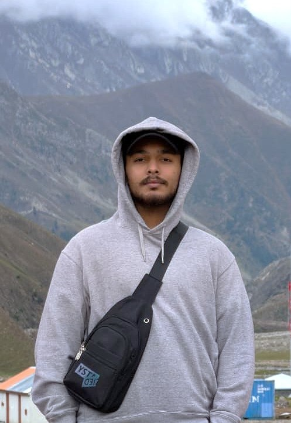
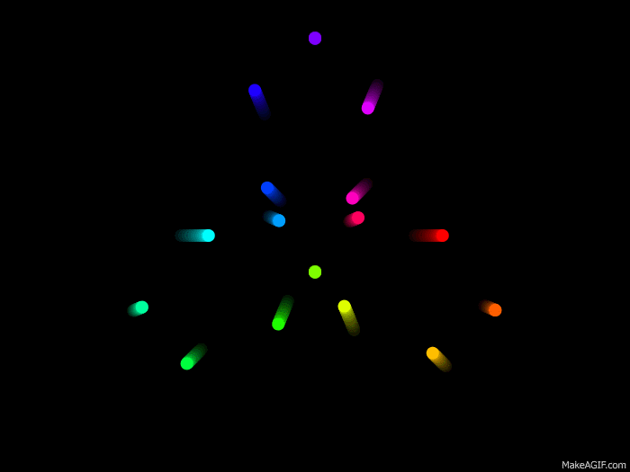
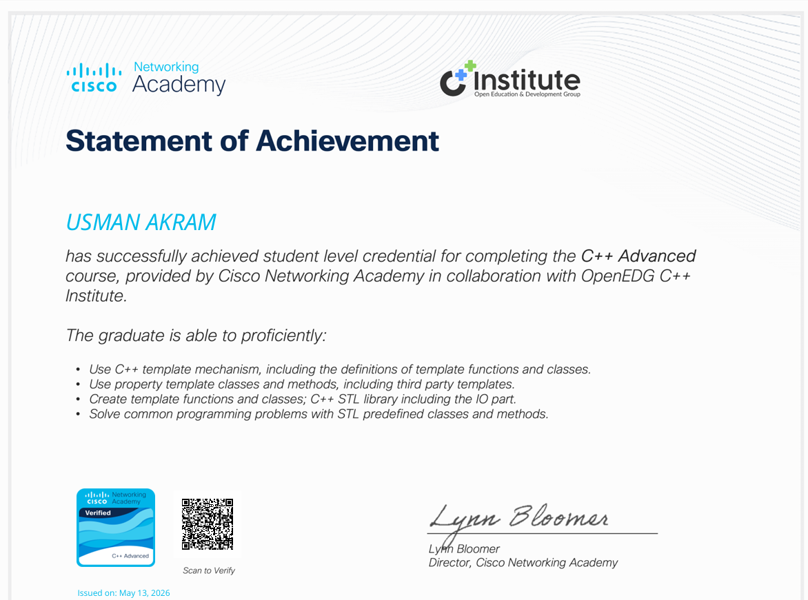
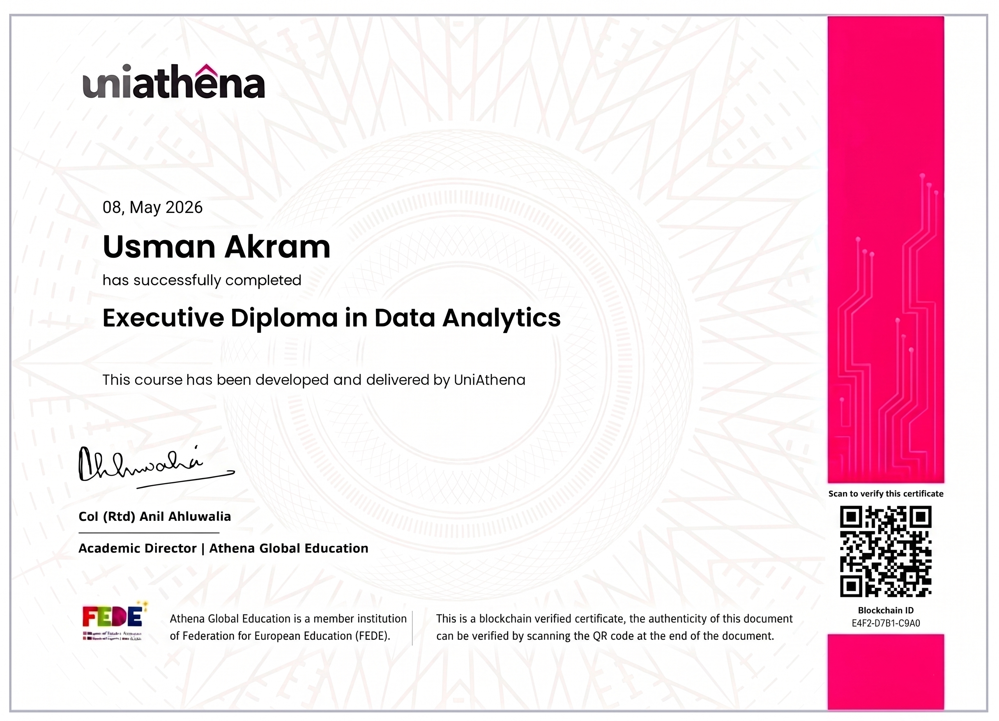
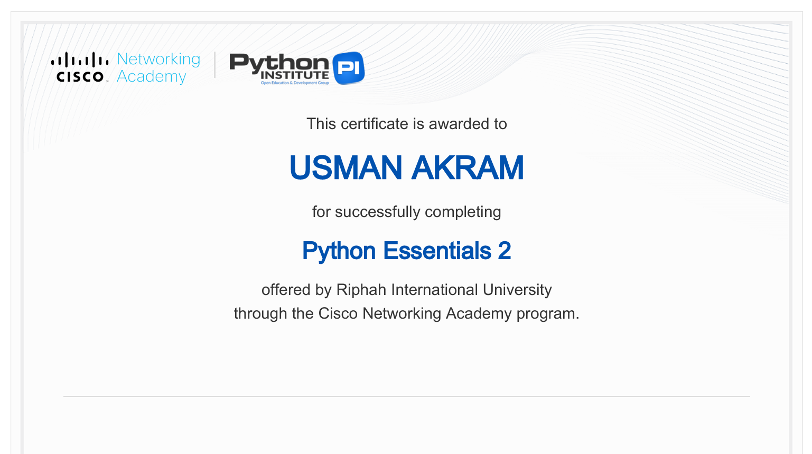
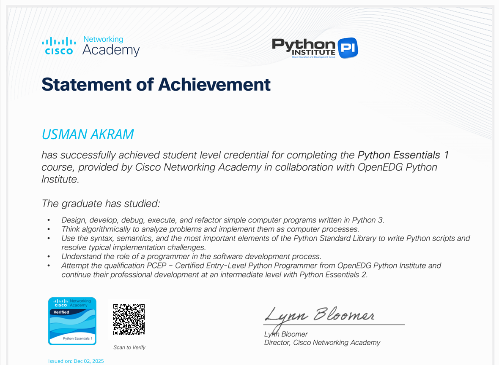
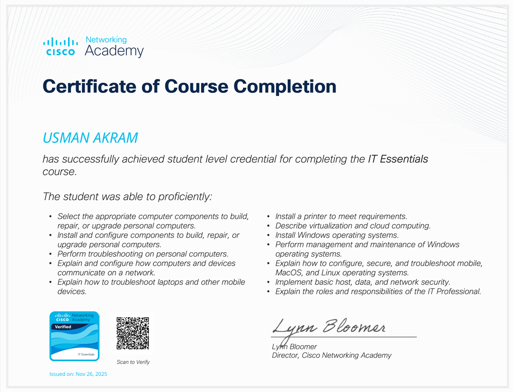
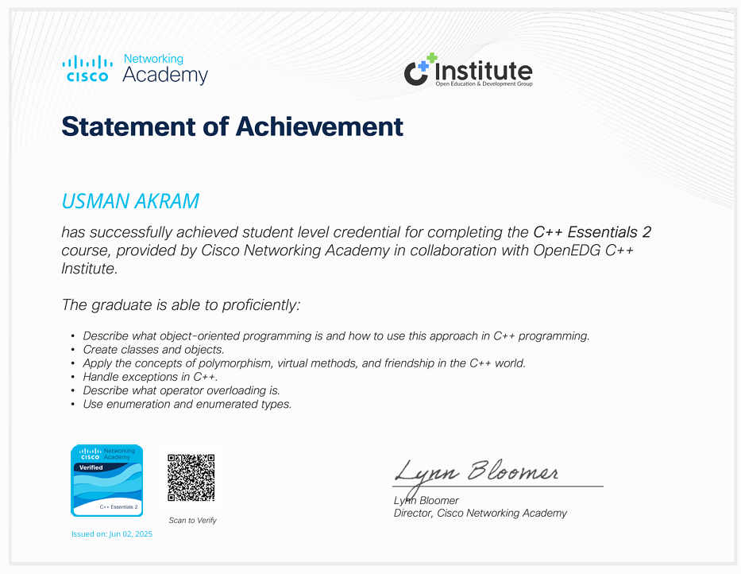
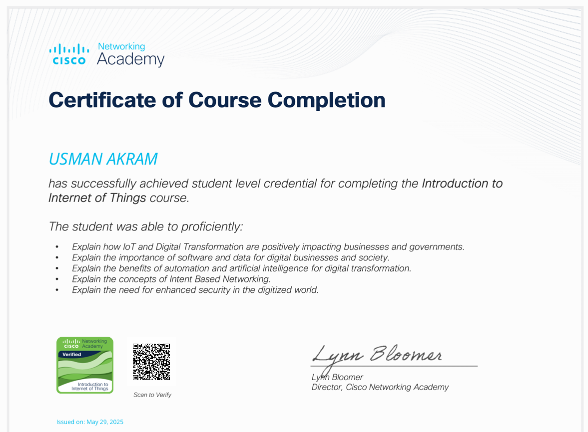
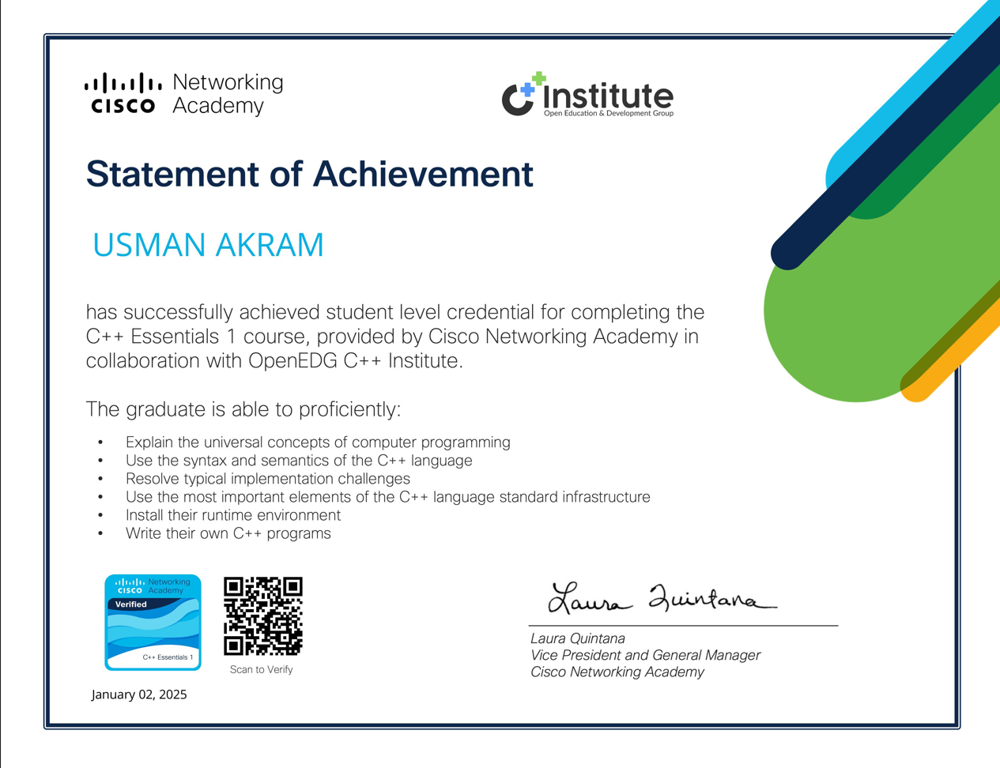

AI Engineering
LLMs, RAG, Vector Databases, and PyTorch.
Full-Stack AI Engineer / 2026
FULL-STACK AI ENGINEER
LLMs, RAG & Vector Databases | Building Applied AI Systems @ Riphah International University

The short version

Artificial Intelligence (BSAI) student at Riphah International University. Passionate about machine learning and algorithmic optimization.
I like turning hard technical problems into useful, readable systems — from local RAG assistants and computer vision pipelines to optimized decision-making tools.
Discipline cultivated through bodybuilding translates to my work ethic in technology: show up, stay curious, and finish what matters.
Let's build something ↗A focused toolkit for shipping applied AI, web products, and robust data foundations.
LLMs, RAG, Vector Databases, and PyTorch.
Prediction pipelines and data processing architectures.
Complex problem solving with C++ and dynamic programming.
Normalized relational databases and Oracle SQL.
Learning fast, shipping deliberately, and making each system stronger with every iteration.
Multimodal LLMs architecture.
ML workflows & data pipelines.
Complete business operations.
Youth football mentor.
A compact portfolio of algorithms, applied AI, machine learning, computer vision, and low-level engineering.
Football squad builder using 0/1 Knapsack optimization.
Local RAG system built with FastAPI, SQLite, and Ollama.
ML pipeline built with Python and Streamlit.
Deep learning model for radiographs.
MS-DOS number guessing game in x86 Assembly.
Keep stacking
A visible archive of credentials, technical skills, and milestones.

01C++ AdvancedCISCO · MAY 2026 02Data Analytics EssentialsCISCO · MAY 2026
02Data Analytics EssentialsCISCO · MAY 2026
03Executive Diploma in Data AnalyticsUNIATHENA · MAY 2026
04Python Essentials 2CISCO NETWORKING ACADEMY · DEC 2025
05Python Essentials 1CISCO NETWORKING ACADEMY · DEC 2025
06IT Essentials 8CISCO NETWORKING ACADEMY · NOV 2025
07C++ Essentials 2CISCO NETWORKING ACADEMY · JUN 2025
08Introduction to IoTCISCO NETWORKING ACADEMY · MAY 2025
09C++ Essentials 1CISCO NETWORKING ACADEMY · JAN 2025Open to opportunities